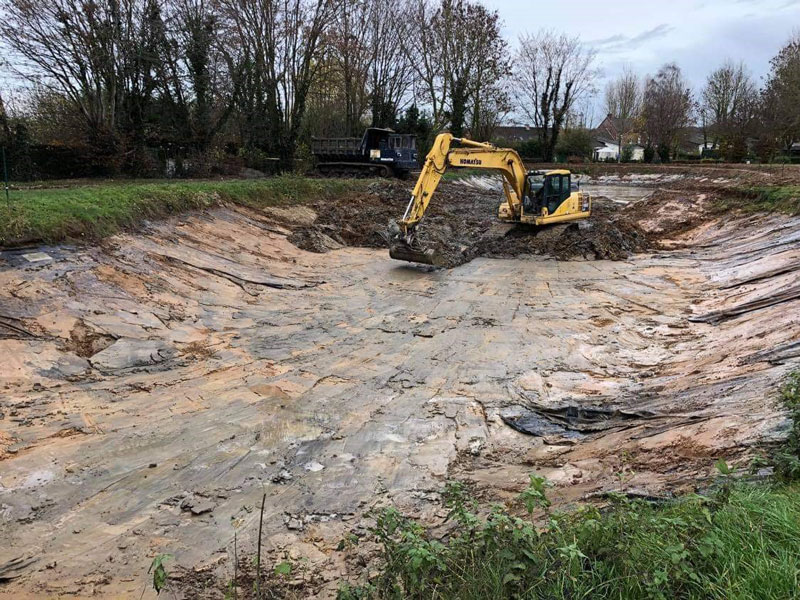
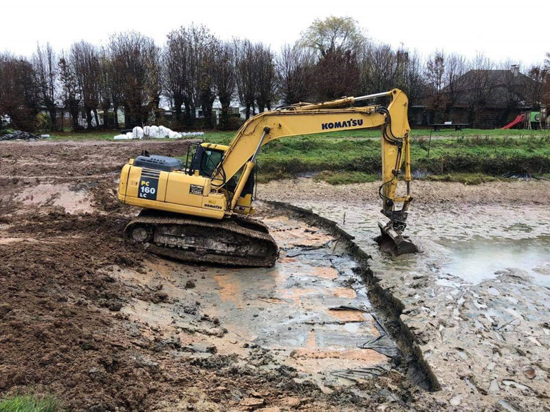
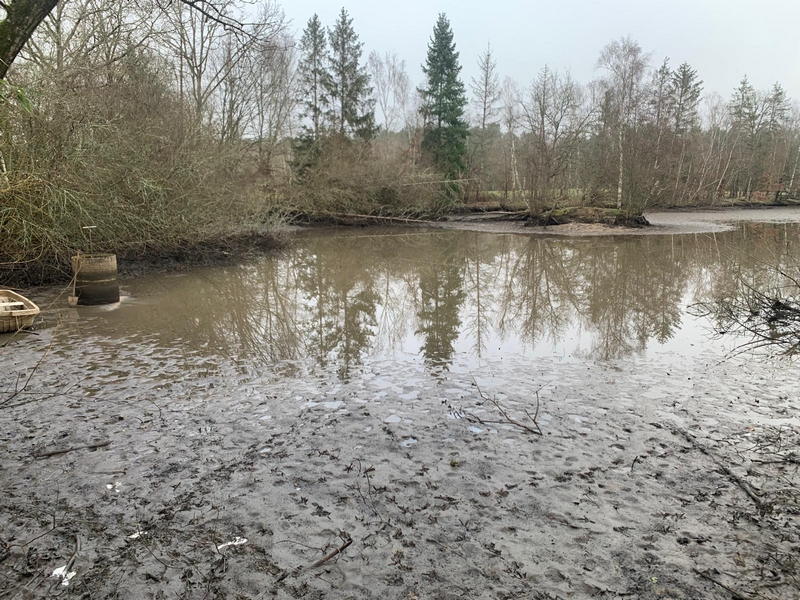

Votre plan d'eau s'envase ? Nous extrayons la vase par pompage sans vider l'étang, sans engins lourds sur les berges, sans interrompre la vie aquatique.
L'hydrocurage — ou curage par aspiration — consiste à pomper la vase accumulée au fond de votre plan d'eau grâce à une drague aspiratrice. La technique la plus douce pour votre étang.
Une pompe à vase submersible est placée dans l'étang. De l'eau est injectée sous pression pour fluidifier les sédiments. La mixture eau/vase est pompée en continu vers des géotubes installés en périphérie du chantier.
Ces géotubes — des tubes en géotextile — filtrent l'eau qui retourne propre dans l'étang, tandis que la vase s'accumule et sèche à l'intérieur. Ce cycle fermé évite toute perte d'eau et maintient le niveau du plan d'eau pendant toute l'opération.

De la mise en place des géotubes jusqu'à l'épandage agricole de la vase séchée — voici comment se déroule un chantier d'hydrocurage de A à Z.
Quelques exemples de plans d'eau traités par l'ETS Vandaele dans les Hauts-de-France et les régions voisines.






L'hydrocurage s'adapte à une grande variété de sites, des étangs privés aux ouvrages hydrauliques.

Contactez-nous pour un diagnostic téléphonique gratuit. Nous évaluons avec vous la faisabilité, le volume à extraire et le budget estimatif — sans engagement.
Disponible du lundi au vendredi · Hauts-de-France et régions limitrophes